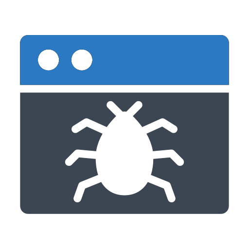

tema4-1a
¿Que es "BYPASS"?
Un "BYPASS" en informática, es un circuito que actúa como válvula
modificando el flujo normal
de datos hacia una ruta alternativa si se produce una caída de corriente o algún otro problema.

¿Para que sirve "BYPASS"?
"BYPASS" es usado principalmente para acceder a áreas restringidas a
usuarios sin que sea
necesario introducir un "PASS" para acceder.
 Ataque con "BYPASS"
https://es.wikipedia.org/wiki/Bypass_(informática)
Ataque con "BYPASS"
https://es.wikipedia.org/wiki/Bypass_(informática)